Profilo Personale e Competenze
Sono un programmatore e analista informatico orientato allo sviluppo software e alla sicurezza delle architetture di rete. Il mio percorso formativo e tecnico esprime una costante ricerca di soluzioni logiche strutturate ed efficienti.
Linguaggi di programmazione consolidati e tecnologie core apprese nel corso degli studi applicati:
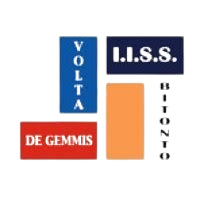
Formazione - I.I.S.S. Volta - De GemmisHo completato con successo un percorso di scuola superiore quinquennale specializzato nel settore Informatico presso l'I.I.S.S. Volta - De Gemmis di Bitonto. Nel corso di questi cinque anni ho acquisito e approfondito metodologie avanzate di programmazione, gestione dei sistemi informativi e logiche di sviluppo software mirate al problem solving.
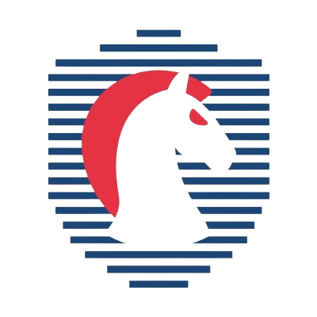
Cybersecurity Excellence - OliCyberPartecipazione competitiva alle Olimpiadi Italiane di Cybersicurezza, superando la rigorosa selezione scolastica iniziale e accedendo alla successiva fase Territoriale in presenza. Il programma ha previsto lo studio avanzato e l'applicazione pratica di protocolli crittografici, tecniche di attacco/difesa nei sistemi informatici e analisi delle vulnerabilità infrastrutturali in linea con le linee guida della Strategia Nazionale di Cybersicurezza.
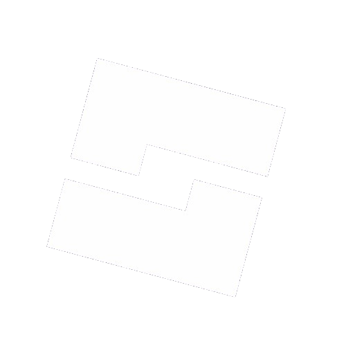
Architettura e Sviluppo: Up & BeyondHo co-progettato e sviluppato l'architettura logica del titolo interattivo Up & Beyond, interamente realizzato all'interno dell'ambiente di sviluppo professionale Roblox Studio per la piattaforma Roblox. Lo sviluppo ha richiesto la stesura di complessi algoritmi di programmazione ad oggetti tramite linguaggio Luau, l'ottimizzazione del trasferimento dati client-server per ridurre la latenza di gioco e l'implementazione di interfacce grafiche responsive (UI). Il progetto ha incluso sessioni metodiche di debugging e stress-testing per garantire un'esperienza utente fluida ed esente da criticità strutturali.
All'interno del gameplay ho strutturato due dinamiche di parkour nettamente distinte e ingegnerizzate for differenti target di utenza:
• Old School Parkour: Una modalità che evoca l'estetica classica e retrò delle origini di Roblox. È caratterizzata da geometrie nette e blocchi dai colori primari estremamente accesi. Sotto il profilo delle meccaniche, questa zona integra una componente competitiva PvP (Player vs Player) unica: presso ciascun checkpoint viene fornita automaticamente una spada a ogni utente, consentendo dinamiche di combattimento tactical volte a ostacolare e destabilizzare avversari durante la scalata.
• Themed Parkour: Un'esperienza interamente costruita su ambientazioni a tema estremamente diversificate che modificano radicalmente l'aspetto degli ostacoli. Gli utenti si troveranno ad affrontare un percorso immersivo in cui i checkpoint cambiano scenario: dal tema bar, dove è necessario saltare in equilibrio su bottiglie in vetro, al tema scolastico con passaggi calibrati su cattedre e banchi di scuola. Le zone includono anche dinamiche ambientate nel cinema, costringendo i giocatori a schivare poltrone, percorsi a ostacoli intrecciati e scatole di popcorn giganti, per poi sfociare in ambientazioni a tema spiaggia e sabbia dal sapore estivo ma dotate di insidie tecniche uniche.
A completamento dell'infrastruttura ludica, ho implementato una specifica Zona Mini PvP, un'arena dedicata dove gli utenti possono confrontarsi direttamente in sessioni di combattimento ravvicinato, valorizzando il bilanciamento delle hitbox e la gestione dei feedback di rete in tempo reale.
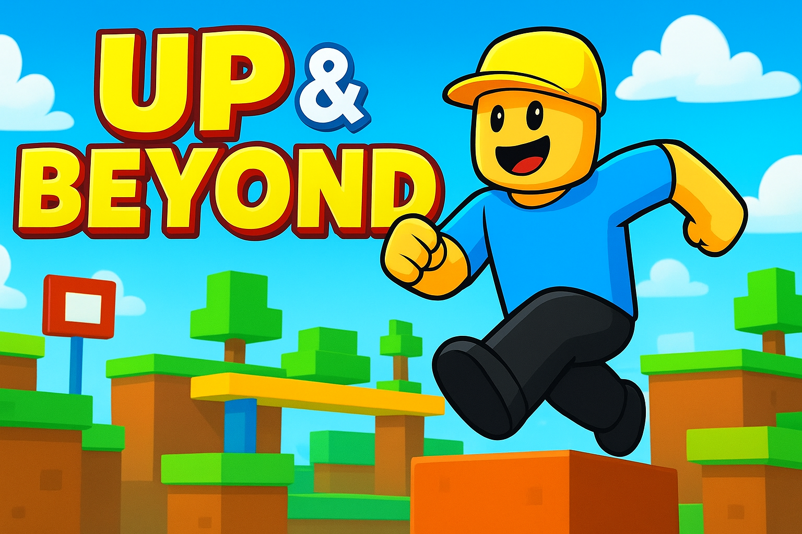
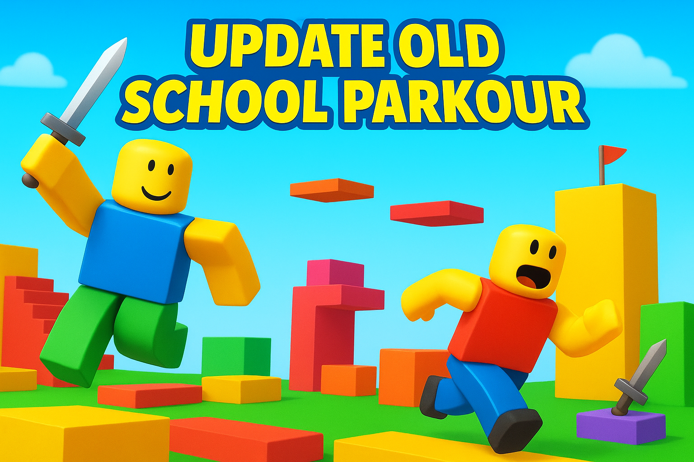
Accreditamenti e Certificazioni Internazionali
Quadro dettagliato dei titoli di studio e professionali conseguiti a seguito di esami di profitto e percorsi formativi specialistici validati.
 Cisco Networking Academy
Cisco Networking Academy
Exploring Networking with Cisco Packet Tracer
Sviluppo di competenze nell'ideazione di topologie di rete complesse, cablaggio logico e configurazione iniziale di apparati di commutazione e instradamento tramite simulatore enterprise.
Instructor: Irene Cassano (IISS Volta-De Gemmis) | Data di Rilascio: 18 Maggio 2026 | Cert ID: 23dc26dc-4e04-4034-8b4e-4cd64d2e1910
Introduction to Cybersecurity
Studio sistemico dei vettori d'attacco moderni, protezione degli endpoint, metodologie di cifratura dati e framework di sicurezza aziendali per mitigare i rischi infrastrutturali.
Instructor: Irene Cassano (IISS Volta-De Gemmis) | Data di Rilascio: 20 Aprile 2026 | Cert ID: 313c6605-88ee-4cf0-af09-fac811893686
Fondo Sociale Europeo (FSE)
Modulo 7 – Etica e sicurezza digitale nel mondo del lavoro
Programma Operativo Nazionale focalizzato sulle normative di conformità dei dati, principi etici nell'utilizzo di sistemi di automazione e protocolli di sicurezza operativi aziendali.
Struttura: I.I.S.S. Volta - De Gemmis (Bitonto) | Codice Progetto: 10.1.6A-FDRPOC-PU-2024-155 (30 Ore) | Rilascio: 20/03/2026 | Dirigente: Grazia Ruggiero
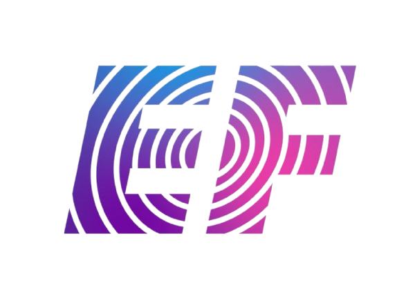
Competenze Linguistiche EFEFSET Certificate of Achievement (Livello B2)
Attestazione ufficiale del livello di competenza linguistica conseguita a seguito di un percorso di immersion totale a Malta. Il programma di studi ha compreso sessioni di perfezionamento accademico e interazione quotidiana con studenti e docenti provenienti da contesti internazionali. L'experience ha consolidato un'elevata flessibilità comunicativa, la capacità di adattamento a dinamiche multiculturali e un'ottima fluidità nell'esposizione tecnica orale e scritta.
Ente Certificatore: Academic Director EF - Malta | Data di Rilascio: 13/03/2026
Portale Istituzionale EF
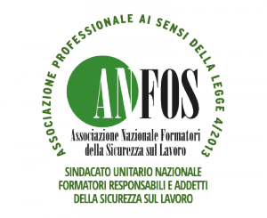
Sicurezza e PrevenzioneFormazione Generale in materia di Salute e Sicurezza sul Lavoro
Certificazione abilitante permanente ai sensi dell'Art. 37 D.Lgs. 81/08 e successivi Accordi Stato-Regioni. Analisi dei fattori di rischio, diritti e doveri dei lavoratori e procedure di evacuazione ed emergenza aziendali.
Ente Formatore: A.N.FO.S. (Validazione O.P.Na.Fo.S.) | Contesto: Percorsi per le Competenze Trasversali (PCTO) | Data Conclusione: 24-10-2024 | Prot: SC26248-24
Esperienze Professionali ed Internazionali
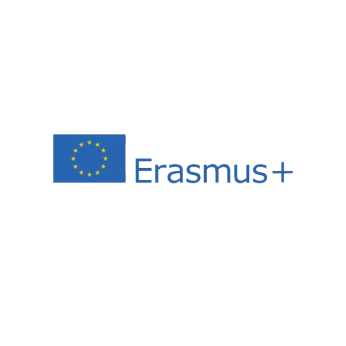
Mobilità Erasmus+ | Creta, Grecia 🇬🇷Tirocinio tecnico formativo svolto presso la sede operativa di Magic Net, azienda focalizzata sulla fornitura hardware ed infrastrutture IT.
Competenze Acquisite ed Operatività: Ho gestito l'ottimizzazione sistematica e la manutenzione di apparati hardware fissi e portatili. Nello specifico, ho eseguito diagnosi software di basso livello e operato aggiornamenti infrastrutturali critici sui dispositivi, come la sostituzione di vecchi dischi magnetici (HDD) con moderne unità a stato solido (SSD), configurando i relativi file system per ripristinare i massimi standard prestazionali delle macchine.
Mobilità Erasmus+ | Zagabria, Croazia 🇭🇷
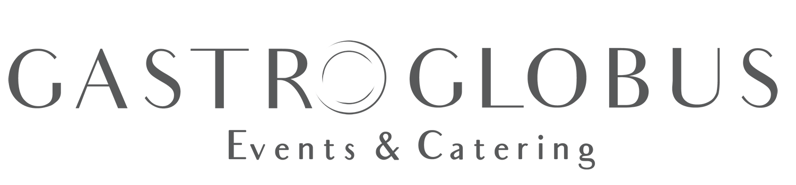
Esperienza formativa e operativa di un mese a Zagabria all'interno del polo congressuale e di banqueting internazionale Gastro Globus.
Operatività in Team: Inserito nel team di cucina sotto la supervisione dell'executive chef, ho collaborato attivamente alla pianificazione della catena logistica delle materie prime, curando con rigorosa attenzione il taglio tecnico delle carni, le procedure di lavorazione e impanatura e la preparazione avanzata dei vegetali, rispondendo a ritmi di produzione intensivi ed elevati standard igienico-sanitari.
⭐ Certificato di Eccellenza Internazionale: Rilasciato dalla direzione aziendale per premiare l'assoluto rispetto degli orari lavorativi, la serietà deontologica dimostrata e la spiccata attitudine collaborativa nel team multilingua.
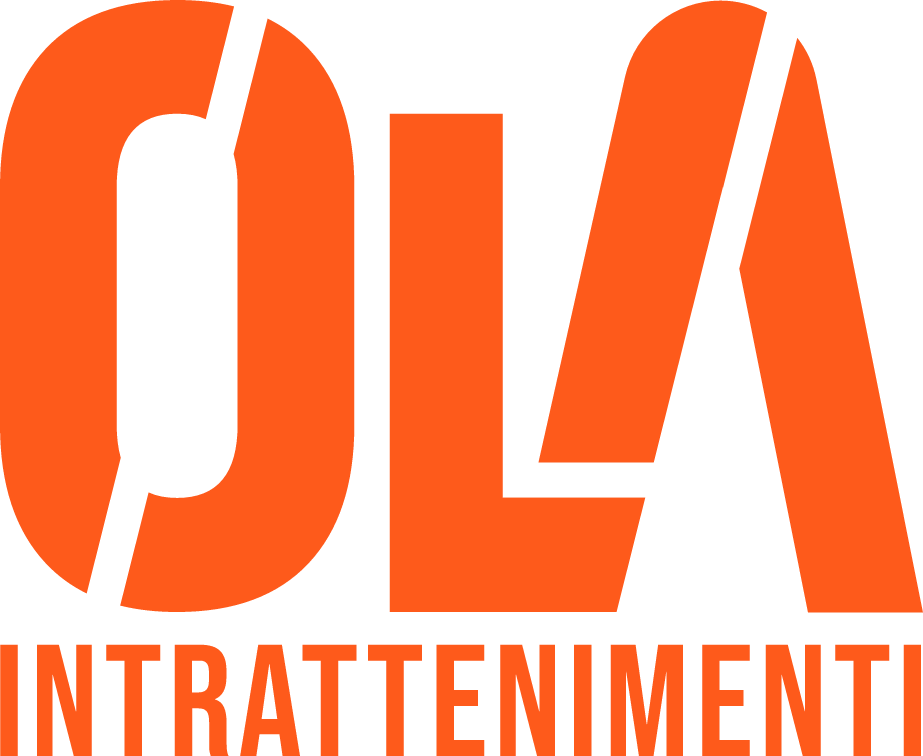
Ola Intrattenimenti - Animatore ProfessionaleAttività lavorativa trimestrale sul campo nel ruolo di Animatore Turistico e Coordinatore Sportivo, preceduta da tre giornate di Academy intensiva focalizzata sulla psicologia relazionale e la gestione dei flussi organizzativi.
Mansioni e Soft Skills: Ho strutturato, pianificato e condotto tornei sportivi ufficiali, grandi giochi a tema e attività ludico-ricreative dedicate a target giovanili. Ho inoltre preso parte attiva alla programmazione artistica serale della struttura esibendomi in spettacoli di cabaret e coreografie di balli di gruppo con alti standard di precisione e coordinazione.
Questa esperienza sul campo ha segnato un momento chiave nel consolidamento della mia maturità personale e flessibilità logistica: ho vissuto in totale autonomia e lontano da casa per l'intera durata del contratto (3 mesi), gestendo in prima persona tempi di recupero, pianificazione economica, alimentazione e dinamiche di convivenza professionale.
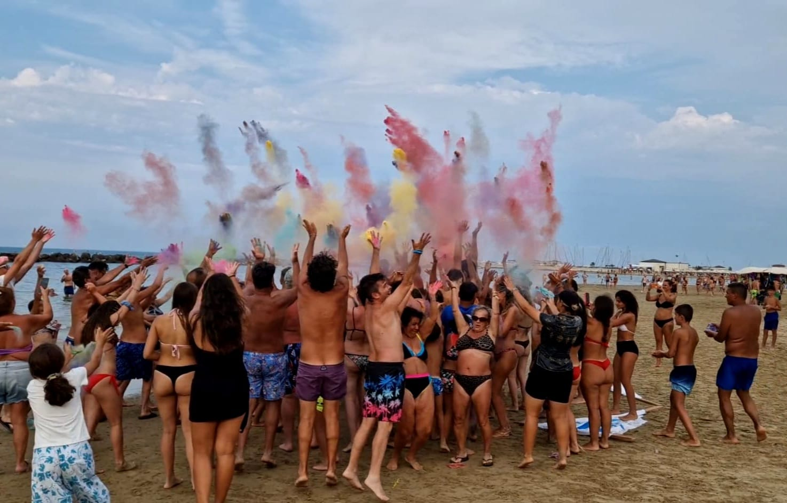
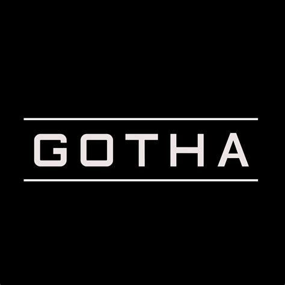
Servizio Clienti | Bar Gotha - BitontoEsperienza lavorativa trimestrale nel settore del front-facing e della logistica di sala svolta durante la stagione estiva 2025.
Attività Svolte: Gestione flessibile dei flussi di cassa, accoglienza clienti e coordinamento delle comande organizzato su turni fluttuanti diurni, pomeridiani e notturni. L'attività ha notevolmente affinato la mia tolleranza allo stress, le doti di problem-solving immediato in presenza di pubblico esigente e l'ottimizzazione del tempo in scenari lavorativi ad alta densità dinamica.